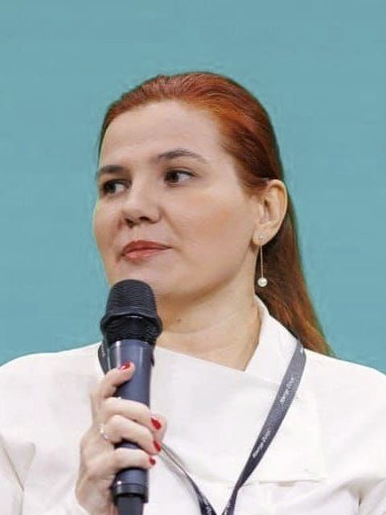

Главная · О нас
О нас
risk-place.ru — практика трех экспертов по управлению рисками, внутреннему контролю, комплаенсу и непрерывности бизнеса. Мы строили эти системы внутри крупных компаний, проводили их через проверки аудиторов и доводили до состояния, когда ими пользуются каждый день. Опыт, накопленный за пятнадцать лет такой работы, и лег в основу наших программ.
Команда
Программы ведет тот, кто в этой теме работал руками. Ниже — чем именно подтверждается опыт каждого.
Управление рисками, внутренний контроль, непрерывность бизнеса
Кандидат экономических наук по управлению рисками в промышленности. «Лучший риск-менеджер России 2020» по версии РусРиск. Пятнадцать лет во главе риск-функций: «Билайн», «Норникель», «Роснефть», риск-консалтинг в Ernst & Young. Директор по рискам нефтехимического мегапроекта стоимостью 20 млрд долларов. Заместитель председателя технического комитета 010 «Менеджмент риска» Росстандарта.
Риски, корпоративное страхование, устойчивость
Кандидат экономических наук. «Лучший риск-менеджер года России 2019». Эксперт рабочих групп ИСО ТК 292 по непрерывности деятельности и цепочкам поставок. Работа с госкорпорацией «Росатом», специалист по радиационной безопасности. Автор книги и более тридцати публикаций, опыт работы с Lloyd's. Награды «Лучший риск-менеджмент в России и СНГ 2015» и «Лучшие автоматизированные решения 2023».

Комплаенс, GRC, санкционные ограничения и экспортный контроль
Руководитель комплаенс в Mercedes-Benz Financial Services. Консультант по GRC в Thomson Reuters и Refinitiv, член Society of Corporate Compliance and Ethics. Автор книг по санкционным ограничениям и комплаенсу, публикации в РБК, «Ведомостях» и Forbes. Подготовила более пятисот специалистов.
Чем подтверждается
Мы стараемся не заявлять о себе того, что нельзя показать. Ниже — то, что проверяется по открытым источникам или по документам.
Как мы работаем
Управление рисками ломается в одном и том же месте: система строится по шаблону, а компания живет по-своему. Реестр заполняют раз в год перед аудитом, карта рисков висит в презентации, а решения принимаются как принимались. Формально все есть, фактически ничего не работает.
Поэтому мы начинаем не с политики, а с разбора: какие процессы приносят деньги, где они рвутся, кто принимает решения и на какие цифры смотрит. Только после этого появляется методология, и она пишется под эту конкретную структуру управления, а не под абстрактную.
Отдельное направление практики — непрерывность бизнеса. Оно выросло настолько, что живет на отдельном сайте: там методология, библиотека материалов, словарь терминов и программа сертификации.
Одна форма для любого вопроса
Программа под отрасль, дашборд рисков проектов, консалтинг или методология — опишите ситуацию, предложим следующий шаг и порядок бюджета.
Предпочитаете почту — напишите на info@risk-place.ru. Адрес: Москва, улица Скаковая, 32с2.